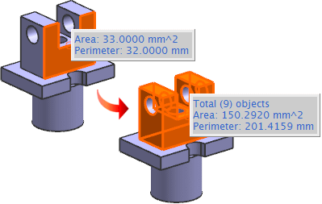

The following commands are enhanced to store the selection intent rule with the measurement:
Measure Length
Measure Face
Measure Bodies
With this enhancement, the stored measurements are updated according to any changes in the input values.
|
Example |
The area and perimeter of the selected face are measured using the Measure Face command with the Face Rule set to Single Face. If you edit the Face Measurement feature and change the selection intent rule to Feature Faces, NX automatically updates the values of the area and perimeter according to the modified selection intent rule.  |
|
Note |
The stored measurement feature is at a particular timestamp order in the part history, and any changes made after the measurement feature are not included in the measurement. |
|
Toolbar |
Utility→Measure Length or Measure Face or Measure Bodies |
|
Menu |
Analysis→Measure Length or Measure Face or Measure Bodies |